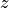
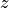
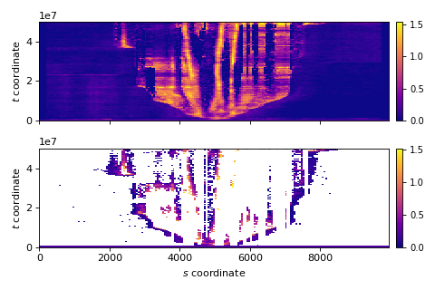

Section lexicon
The Section module defines some terms that are used throughout the code and rest of the documentation.
Most importantly, a Section is defined by a set of coordinates in the x-y plane of a cube.
Therefore, we transform variable definitions when extracting the section, and the coordinate system of the section is defined by the along-section direction  and a vertical section coordinate, which is  when viewing stratigraphy, and
and a vertical section coordinate, which is  when viewing stratigraphy, and  when viewing a spacetime section.
when viewing a spacetime section.
The data that make up the section can view the section as a spacetime section by simply calling the
import matplotlib.pyplot as plt
import deltametrics as dm
rcm8cube = dm.sample_data.cube.rcm8()
rcm8cube.stratigraphy_from('eta')
rcm8cube.register_section('demo', dm.section.StrikeSection(y=10))
fig, ax = plt.subplots(4, 1, sharex=True, figsize=(6, 6))
ax[0].imshow(rcm8cube.sections['demo']['strata_sand_frac'].as_spacetime(),
origin='lower', cmap=rcm8cube.varset['strata_sand_frac'].cmap)
ax[0].set_ylabel('$t$ coordinate')
ax[1].imshow(rcm8cube.sections['demo']['strata_sand_frac'].as_spacetime(preserved=True),
origin='lower', cmap=rcm8cube.varset['strata_sand_frac'].cmap)
ax[1].set_ylabel('$t$ coordinate')
ax[2].imshow(rcm8cube.sections['demo']['strata_sand_frac'].as_stratigraphy(),
origin='lower', cmap=rcm8cube.varset['strata_sand_frac'].cmap)
ax[2].set_ylabel('undefined\ncoordinate')
rcm8cube.show_section('demo', 'strata_sand_frac', ax=ax[3], style='mesh')
ax[3].set_ylabel('$z$ coordinate')
ax[3].set_xlabel('$s$ coordinate')
plt.show()
{kind=link}
{kind=link}
